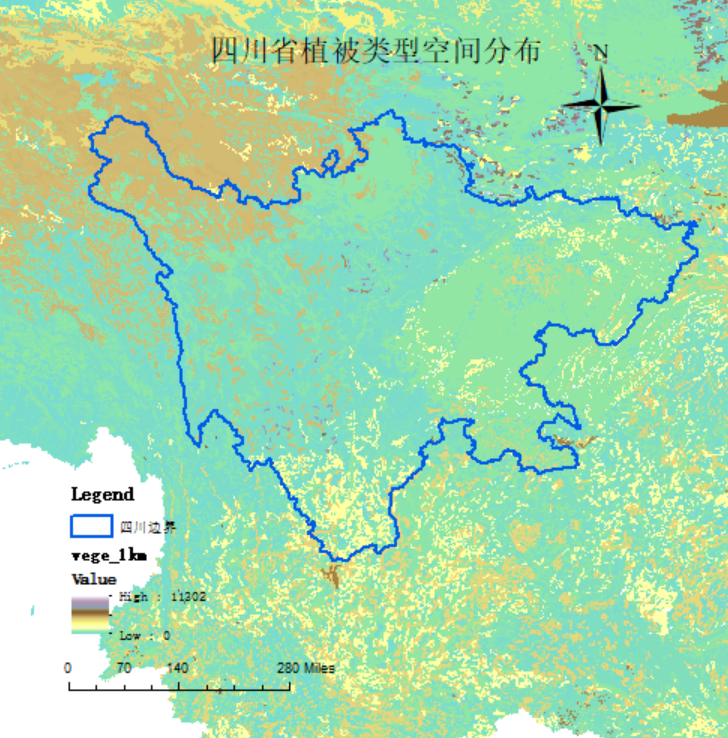
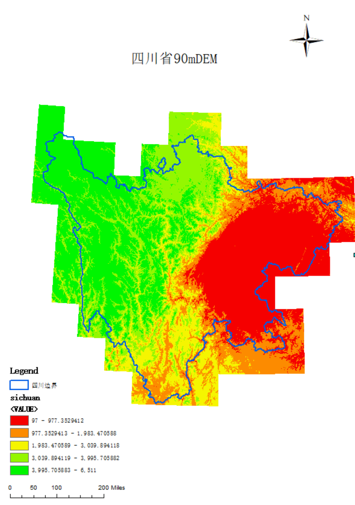
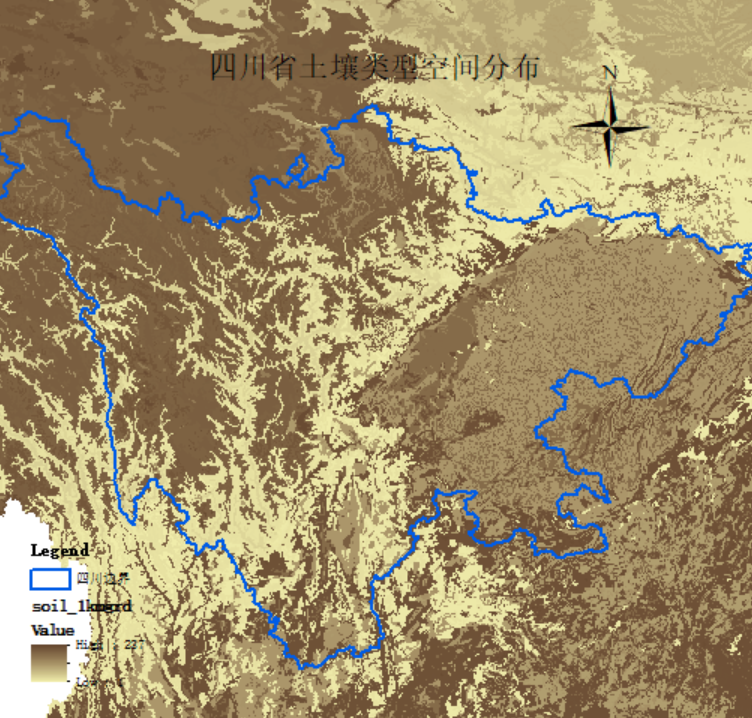

四川省环境概况
水系概述
四川水系发达，河流众多，长江上游的重要支流如岷江、沱江、嘉陵江、乌江流经省内大部分地区。金沙江构成其西部和南部的部分边界。这些河流不仅是重要的水资源来源，也塑造了四川独特的地貌景观。
主要湖泊有泸沽湖（部分）、邛海等。丰富的水资源支持了农业、工业和居民生活，同时也是众多水生野生动物的栖息地。
植被类型
四川省植被类型丰富多样，从东部盆地的亚热带常绿阔叶林到西部高原的高山草甸和灌丛，是中国生物多样性最丰富的省份之一。
四川省地处亚热带，北亚热带植被和青藏高原高寒植被交错分布。东部四川盆地主要为亚热带常绿阔叶林，川西南山地以亚热带常绿、落叶阔叶混交林为主。
- 森林(35%)：亚高山针叶林、常绿阔叶林、落叶阔叶林
- 灌丛(25%)：高山灌丛、干旱河谷灌丛
- 草地(20%)：高山草甸、亚高山草甸
- 农田植被(15%)：四川盆地平原和丘陵区
- 湿地植被(3%)：沼泽植被、水生植被等
- 其他(2%)：特殊生态系统
多样的植被为大熊猫、金丝猴、羚牛等珍稀野生动物提供了理想的栖息和觅食环境。
地形地势
四川省地势西高东低，地形复杂多样，是中国地形最复杂多样的省份之一，地形垂直差异巨大。
西部为青藏高原的东缘，平均海拔4000-5000米，贡嘎山海拔7556米为省内最高点。东部为四川盆地，平均海拔300-700米，最低点约244米。
- 极高山区(16.5%)：海拔4500米以上，高山、冰川、雪山
- 高山区(27.5%)：海拔3000-4500米，山高谷深
- 中山区(32.5%)：海拔1000-3000米，山地起伏
- 低山丘陵区(17.5%)：海拔500-1000米，丘陵起伏
- 平原与河谷区(6%)：海拔500米以下，地势平坦
这种复杂多样的地形为野生动物提供了丰富的生态位和多样的生存空间。
土壤类型
四川省土壤类型随地形和气候变化而异，垂直地带性明显，是中国土壤类型最丰富的省份之一。
- 紫色土(32.5%)：四川盆地及边缘山地，质地多为中壤至重壤
- 黄壤(22.5%)：盆地周围海拔800-1800米的低山地带
- 高山草甸土(17.5%)：海拔3500米以上的高山区
- 褐土(11%)：海拔1500-2500米的中山地带
- 暗棕壤(9%)：海拔2500-3500米的亚高山区
- 水稻土(6.5%)：成都平原、川南丘陵等水源丰富地区
不同土壤类型影响植物群落的组成和结构，决定了野生动物的分布格局。如大熊猫主要分布在棕壤和暗棕壤区域，而水鹿等动物则多见于黄壤区域。
建成区与保护区变化
四川省建成区面积从2000年的991.71平方公里迅速增长到2023年的3411.76平方公里，增长超过3倍。
自然保护区面积从2004年的145.80万公顷增长到2023年的304.91万公顷，增长超过2倍。
两者呈现同步增长趋势，表明四川省在经济发展的同时注重生态保护建设。
关键时期：2006-2007年保护区面积大幅增加；2016年建成区面积增长率达到高峰14.64%；2020-2023年两者增长趋于平稳。